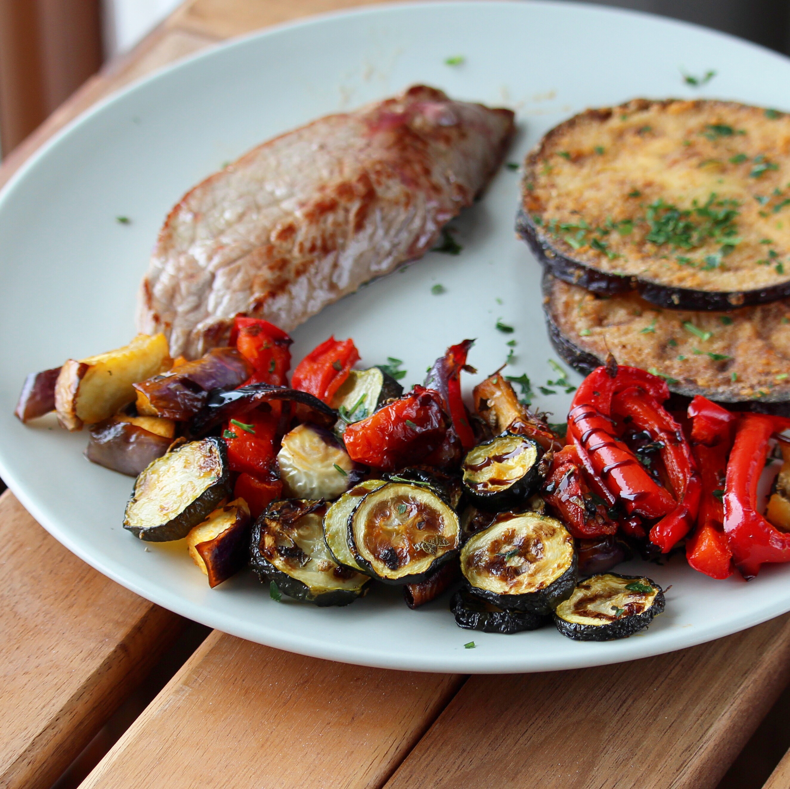

Sheet Pan Ratatouille

Description
Ratatouille is a French Provençal dish of stewed vegetables which originated in Nice, and is sometimes referred to as ratatouille niçoise. Recipes and cooking times differ widely, but common ingredients include tomato, garlic, onion, courgette (zucchini), aubergine (eggplant), capsicum (bell pepper), and some combination of leafy green herbs common to the region.
- 1 large eggplant, cut into 1/2-inch cubes
- 2 zucchinis, cut into 1/2-inch slices
- 2 heirloom tomatoes, cut in wedges
- 1 white onion, cut into 1/2-inch-thick rounds
- 1 red bell pepper, cut into 1/2-inch strips
- 4 cloves garlic
- 2 tablespoons olive oil
- 2 tablespoons chopped fresh rosemary
- 1 teaspoon salt
- ½ teaspoon ground black pepper
- 1 tablespoon balsamic vinegar